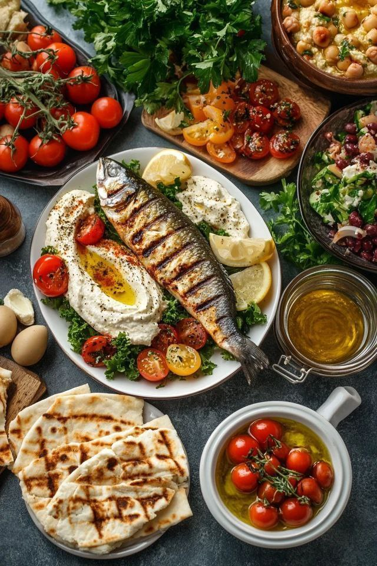

Istanbul, the heart of Turkey, is a city that uniquely bridges two continents — Europe and Asia. Famous for its rich history, stunning architecture, and picturesque views along the Bosphorus, Istanbul offers an unforgettable experience for every traveler. Wander through its ancient streets and feel the echoes of empires past, from majestic palaces to historic mosques and vibrant bazaars. Savor the flavors of authentic Turkish cuisine, from sizzling kebabs to sweet baklava, and immerse yourself in a culture that beautifully blends the modern with the traditional. Whether it's the call to prayer resonating across the city, a peaceful ferry ride along the Bosphorus, or a mesmerizing sunset over the Golden Horn, Istanbul captivates the senses and leaves a lasting impression. Truly, it is a city where every corner tells a story, and every moment feels magical.
| Dish | Description | Image |
|---|---|---|
| Kebab 🥩 | Grilled meat cooked to perfection over charcoal, served with fresh bread and vegetables. The taste instantly transports you to the heart of traditional Turkey. | |
| Baklava 🰠| Layers of thin pastry filled with nuts and drizzled with honey. Each bite is a burst of sweetness and deligh. | |
| Shawarma 🌯 | Vertical rotisserie meat, served in soft bread with delicious sauces and fresh veggies. A favorite street food for everyone. | |
| Hummus 🥣 | Creamy blend of chickpeas, olive oil, and garlic. Served as an appetizer with fresh bread, perfect for opening the appetite. | |
| Turkish Tea 🵠| Traditional Turkish black tea, served in small tulip-shaped glasses. A daily ritual that’s part of Istanbul’s culture. | |
| Grilled Fish 🟠| Fresh fish from the Bosphorus, grilled over charcoal and served with lemon slices. A magical dining experience by the water. |  |